Оффис хэсэг
Компьютер, Сүлжээ
652Нийт сүлжээнд холбогдсон төхөөрөмж
53Цаг бүртгэлийн төхөөрөмж
490Компьютер
86Принтер
22Нэвтрэх төхөөрөмж
Компьютер, сүлжээний ажлууд
- Байгууллагын 2025 оны төлөвлөгөөнд тусгагдсан 30 ширхэг тог баригч, 11 notebook, 13 принтер, 10 дэлгэц, 410 антивирусын лиценз, 54 компьютер-ыг программчлан хүлээлгэн өгсөн.
- Мянганы сорилтын сангаас нийлүүлэгдсэн 20 компьютер, сүлжээний тохиргоо хийж, шаардлагатай хэрэглээний программуудыг суулган, хуваарийн дагуу зохион байгуулалтын нэгжүүдэд хүлээлгэн өгсөн.
Ажлын явцын зургууд


Шилэн кабель
200 кмШилэн кабель ашиглалт
30Томоохон гэмтэл засвар
3 / 3Ирсэн / явуулсан бичиг
32ХАБЭА ажиллах зөвшөөрөл
Шилэн кабелийн ажлууд
- Ус сувгийн удирдах газарт ~200 км орчим шилэн кабель ашиглаж байна.
- Тайлант хугацаанд 30 удаагийн томоохон гэмтлийг засварлан шийдвэрлэсэн.
- 2025 оны Ус сувгийн удирдах газрын хөрөнгө оруулалтанд төвийн станцыг шилэн кабелиар холбох ажил төлөвлөж 100% хэрэгжсэн.
- 2025 онд Улаанбаатар хотын хэмжээнд хэрэгжиж буй улсын болон нийслэлийн хөрөнгө оруулалттай томоохон дэд бүтцийн төслүүдийн хүрээнд шилэн кабелийн угсралт, сүлжээний зохион байгуулалт, шийдэл холболтод хяналт тавин ажиллаж, улсын чанартай 3 стратегийн төсөл болон нийслэлийн хэрэгжүүлж буй 1 төслийн хүрээнд ус хангамжийн 5 цэгийг нэгдсэн хяналтын системд холбох ажилд хяналт тавин ажиллаж байна.
Ажлын явцын зургууд
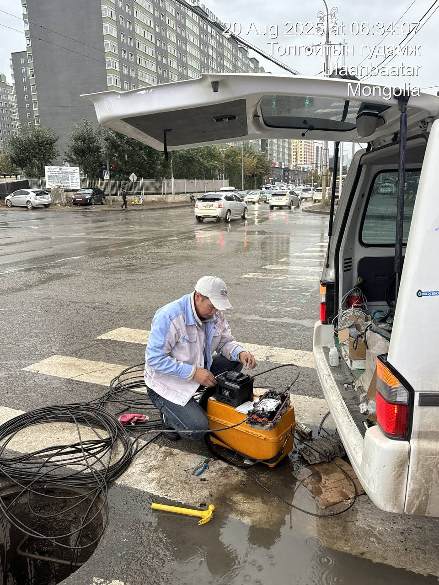
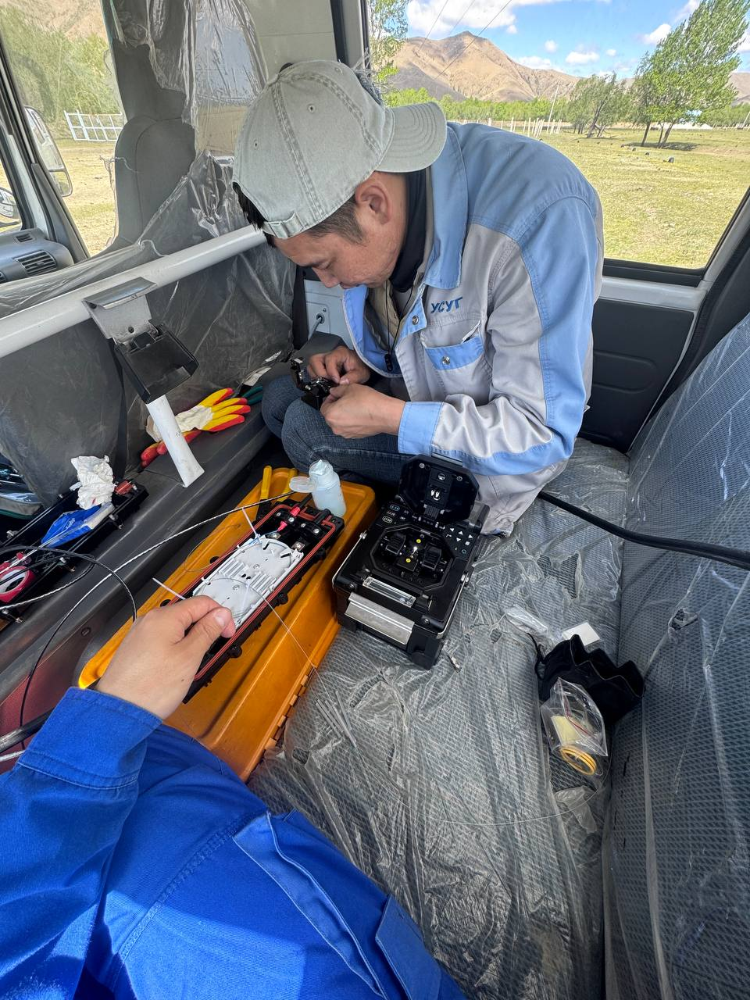
.jpg)
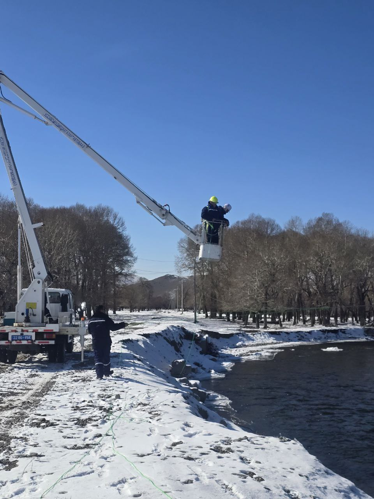
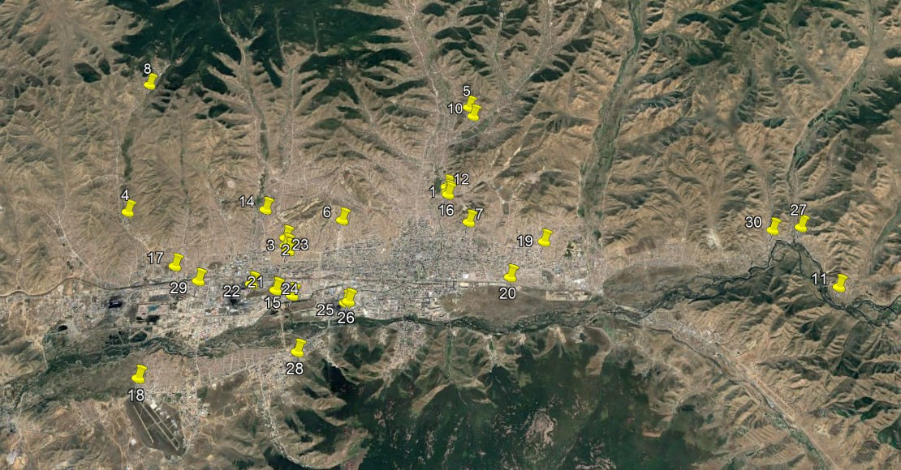
Хяналтын камер
1032Нийт камерын тоо
508Машины дугаар таниулсан
92Хувиарт үзлэг
31Камер шүүх
68Камерын засвар
Хяналтын камерийн ажлууд
- Төвийн диспетчерийн өрөөнд хяналтын дэлгэц суурилуулж, бодит цагийн хяналтын боломжийг бүрдүүлсэн.
- Бохир зөөврийн цэгүүдийн төв диспетчерийн байнгын хяналтад оруулж, тоног төхөөрөмжийн ашиглалтын зааврыг багтаасан гарын авлага боловсруулж, холбогдох ажилтануудад хүлээлгэн өгсөн.
- Шугам ашиглалт, угсралт засварын албаны төвийн хэсэгт бичигч, 4TB hard, switch, 2 камер суурилуулж хяналт оруулсан.
- Дусалхүү цэцэрлэгт бичигч, 4TB hard суурилуулж, тохиргоо хийж хяналт оруулсан.
- Орбит насос станцад 1 камерыг үүд рүү чиглүүлэн шинээр суурилуулж ашиглалтад оруулсан.
- Төв байрны 9 давхарт 360° дуу дүрс бичлэг хийх камер суурилуулсан.
- 603-р худагт камер, бичигч, hard суурилуулж холболт, тохиргоо хийж хүлээлгэн өгсөн.
Ажлын явцын зургууд
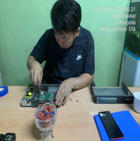
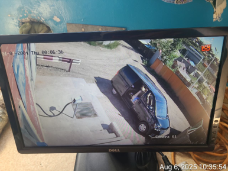
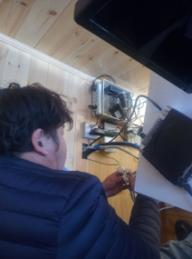
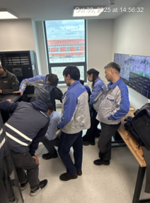
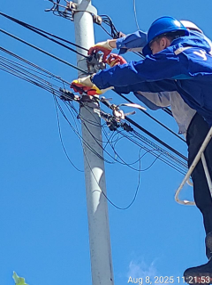
Кибер аюулгүй байдал
32Мэдээлэл алдагдахаас хамгаалсан
230Веб сайтын халдлагаас хамгаалсан
10Системийн нөөцлөлт
470Нэвтрэх системийн тохируулга
Кибер аюулгүй байдлын ажлууд
- Байгууллагын кибер аюулгүй байдлыг хангах үйл ажиллагааны дотоод журмыг шинэчилж батлуулсан.
- SMBv1 протоколыг хааж, илэрсэн эмзэг байдлыг арилгасан.
- Сүлжээний аюулгүй байдлын дахин зохион байгуулалтын ажлыг эхлүүлж 30–40% гүйцэтгэлд хүргэсэн.
- SIEM технологийг суулгаж, тохируулгын ажил хийгдэж Alarm management, Malware detection, Threat intelligent тохиргоонууд хийгдсэн
- WAF буюу Web application Firewall ийг өөрийн сервер дээр шилжүүлж дахин deploy хийх ажил хийгдэж, туршилт тохируулга хийгдсэн.
Ажлын явцын зургууд
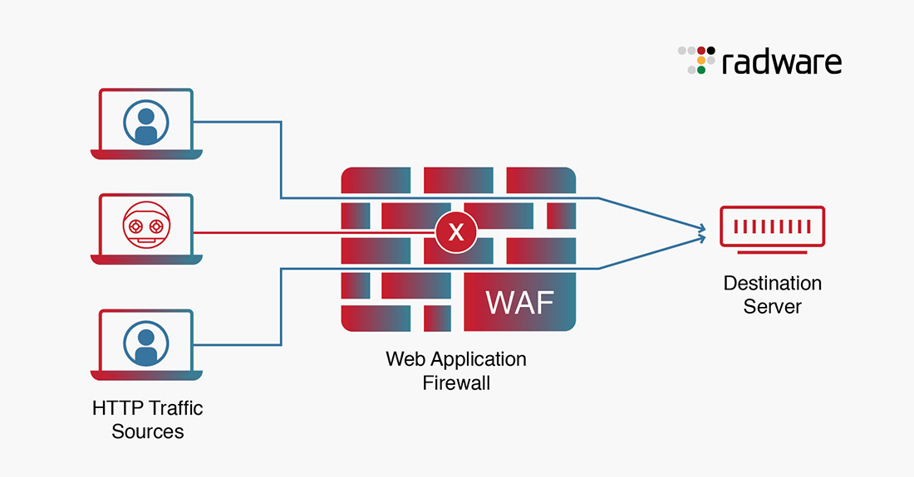


Холбоо
63Суурин утас
26IP утас
82Мэдээ өгдөг утас
664Дата дугаар
79Дуудлага барагдуулалт
8Акт
Холбооны ажлууд
- Холболтын тасалдал, саатлыг бууруулах зорилгоор сүлжээний маршрутыг дахин зохион байгуулсан.
- Харилцаа холбооны зохицуулах хороо руу радио давтамж ашиглах энгийн зөвшөөрөл хүсэх тухай албан бичиг төлөвлөж, материал бүрдүүлэн өгсөн. Хүсэлтийн дагуу Харилцаа холбооны зохицуулах хороотой радио давтамж ашиглах эрхийн бичгийн гэрээ байгуулж радио давтамж ашиглах эрхийн дагуу станцуудад давтамж тохируулсан.
- Дотоодын цэргийн 805 болон 836 дугаар ангиудын хэрэглэдэг нийт 54 цэгийн радио станцуудын ашиглалт, ажиллагааг шалгасан. Цэргийн хоёр ангиас хүссэн хангамжийн дүнг 53% -90% буулгаж, дүгнэлт өгсөн.
Ажлын явцын зургууд
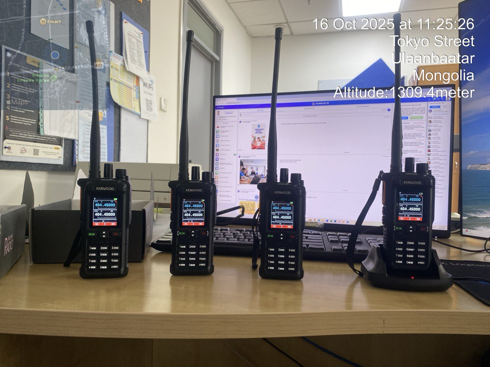
.jpg)
.jpg)
.jpg)
.jpg)
.jpg)
.jpg)
.jpg)